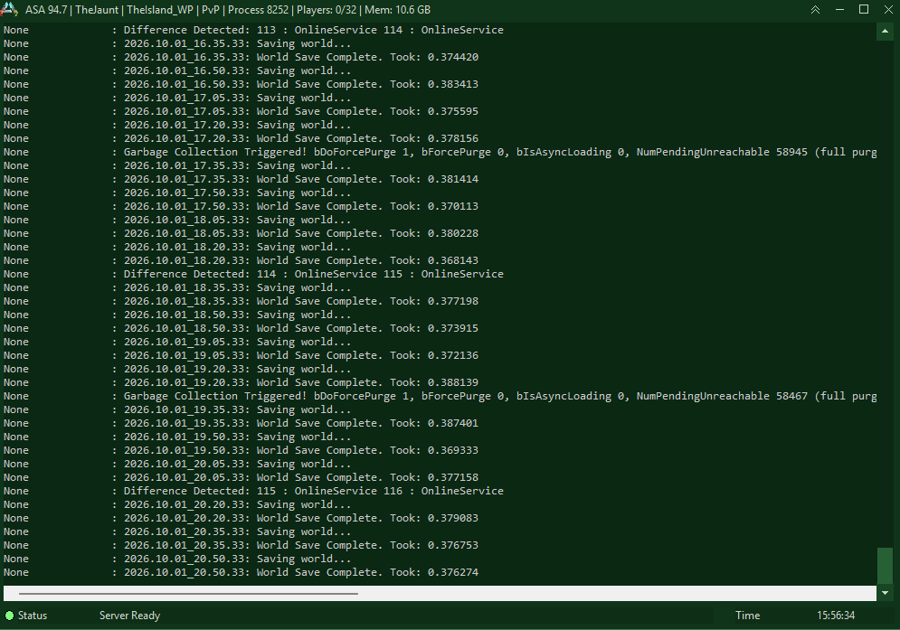
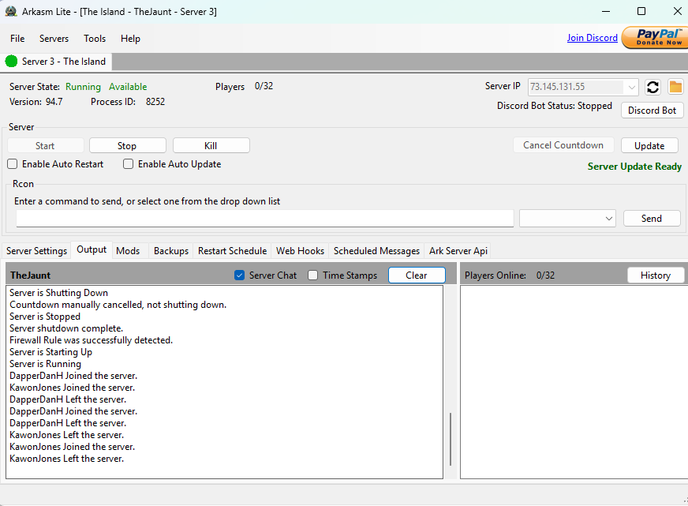

Game Server / Home Lab Infrastructure
I host and manage dedicated game servers for multiple games using my own hardware. This involves configuring server software, managing networking and port forwarding, installing mods and plugins, and troubleshooting connectivity issues. The hardest part is definitely troubleshooting the server. A majority of the games I play involve some sort of modding which is always an issue with compatibility. Whether that is getting all the mods to work together or game versions can be different per mod and a lot of the fixes are not documented somewhere. Some of the games I have done are Ark, Minecraft, Project Zomboid, Rust, and Valheim. I am going to put a screenshot of the server running and the software I use in hopes to kind of show what I see. The game I am currently playing is Ark Survival Ascended. If you played the game you could join this server right now.

